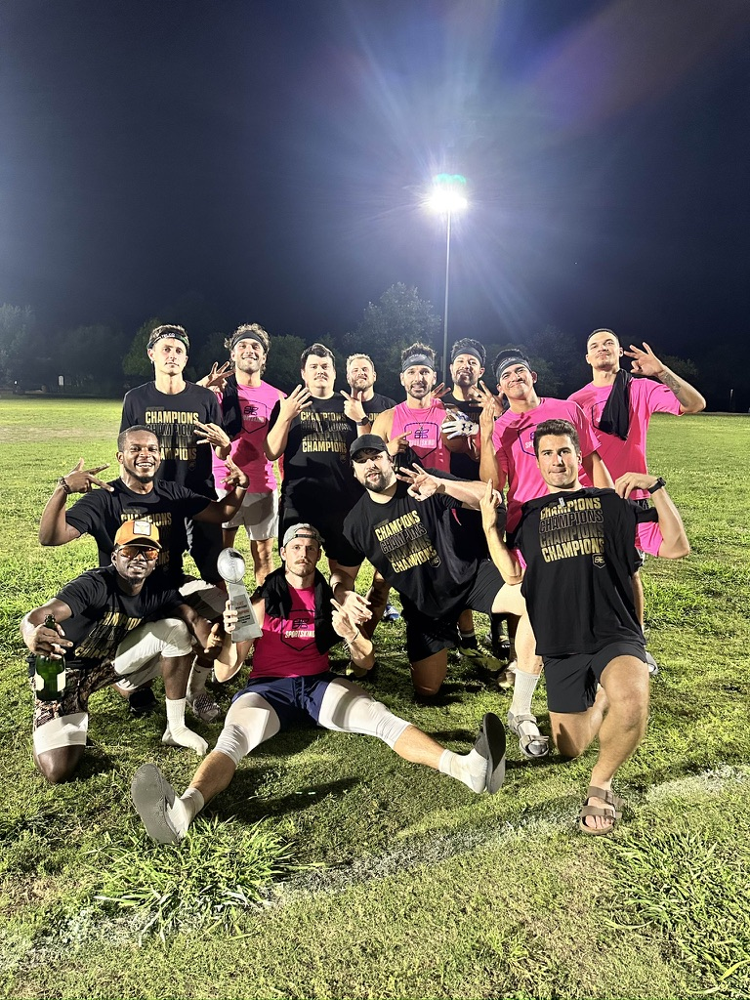
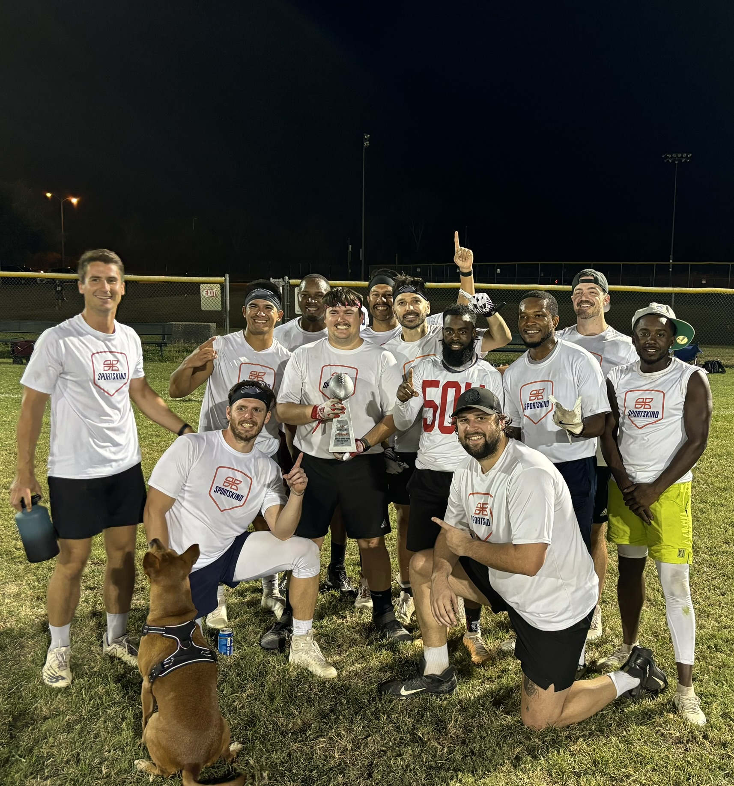

Latest News
üèÜ Spring 2025 Recap: Undefeated Champions & 3-Peat Complete
Final Record: 9-0
Result: üèÜ Spring 2025 Champions
History has been made! New Era finishes the Sportskind Spring 2025 season undefeated, locking in a dominant 9-0 record and securing our third consecutive championship title. With each game, we showcased grit, chemistry, and an unrelenting drive to win — and we capped it all off by lifting the trophy once again.
üí™ Season Highlights:
- 3-Peat Champions (Fall 2024, Winter 2025, Spring 2025)
- Dominant performances on both sides of the ball
- Unmatched teamwork and accountability
- Locked in another chapter of the New Era dynasty
We’re proud of the work everyone put in this season — from the vets stepping up week after week to the new additions making big-time plays.
üöÄ What‚Äôs Next?
The bar is higher than ever, and we’re not done. As we turn our focus to Summer 2025, the goal remains the same: win, and keep building the legacy.
Let‚Äôs keep the energy, the preparation, and the culture going. üèàüî•
New Era Dominates Again with a 40-0 Shutout against Rampage! üöÄüî•
Another week, another statement win! New Era put up an offensive clinic, dropping 40 points while the defense remained impenetrable, securing a 40-0 shutout against yet another opponent.
Key Highlights from the Game:
- Explosive Offense: The offense fired on all cylinders, putting up 40 points with contributions from every part of the field.
- Lockdown Defense: Another week, another shutout! The defense held strong, allowing zero points and keeping the opposition completely scoreless.
- Interception King: One key interception by Orlan turned the tide and kept the momentum in New Era's favor.
With this win, New Era remains undefeated this season and is gearing up for the next challenge against CTE. Stay tuned for more highlights as we continue our dominant run! üèÜüî•
New Era Shuts Out Gridiron Gang with a Dominant 28-0 Victory! üößüî•
New Era continues to make a statement in the Spring 2025 season with a commanding 28-0 win over Gridiron Gang! Our defense was unstoppable, securing a shutout while the offense put on a show with key plays all over the field.
Key Highlights from the Game:
- Lockdown Defense: The defense played lights out, allowing zero points and snagging two interceptions by Grayson & Orlan to shut down Gridiron Gang’s offense.
- Highlight Reel Grab: Steve Blackhart made an insane one-handed touchdown catch that left the teams stunned.
- Clutch TDs: Don, Rezz, and Erick came up big with key touchdown receptions to seal the victory.
- Flags: Two crucial flag grabs prevented New Era from breaking loose and expanding the score.
This dominant performance sets us up for next week's matchup against Rampage. Another big challenge awaits, and New Era is ready to keep the momentum going! üèÜüí™
New Era Kicks Off Spring 2025 with a Statement Win! üèàüî•
The Spring 2025 SportsKind season is officially underway, and New Era is back in action! We started the season strong with a dominant 21-7 victory over our rivals, No Fly Zone.
Key Highlights from the Game:
- James Dillon set the tone with two touchdowns, making a huge impact on offense.
- Steve and Erick came through clutch, adding extra points to extend the lead.
- Our defense played lights out, holding No Fly Zone to just one touchdown the entire game.
- Andy Boileau recorded a crucial sack, keeping the pressure on the opposing QB.
This win sets the tone for what promises to be another exciting season. Stay tuned for more game recaps, highlights, and big moments as we continue our run! New Era is just getting started! üöÄüèÜ

New Era Takes the Crown: Fall 2024 SportsKind Champions! üèÜ
Victory is ours! New Era has officially claimed the Fall 2024 SportsKind flag football championship. Facing off against our long-time rivals, Good Ol' Boyz and No Fly Zone, we left it all on the field and emerged victorious in both matchups.
This season has been one for the books, and we couldn't have done it without the heart, hustle, and teamwork that define New Era. To all our fans and supporters—thank you for standing with us every step of the way.
Stay tuned for updates as we celebrate this incredible achievement! üéâ
Playoff Bound: New Era Dominates to Clinch the #2 Seed!
The regular season has come to a triumphant close, and New Era is heading to the playoffs in style! In our final game, we delivered an absolute statement with a crushing 41-0 victory over Goal Intended. It was a complete team effort, showcasing the grit, determination, and skill that has defined our season.
With this win, we’ve locked in the #2 seed, setting the stage for an epic playoff run. The stakes are higher than ever, and we’re ready to bring everything we’ve got to the field. Thank you to all our fans for the unwavering support this season—your energy keeps us going!
Stay tuned for playoff updates, and let’s make history together. New Era is coming for the championship!
New Era's Winning Streak Continues with Back-to-Back Victories!
The season is heating up, and New Era is on fire! After a few action-packed weeks, we're thrilled to share the latest victories:
- November 5: We took on the Vibe Raiders and came out with a decisive 39-12 win, showcasing our unstoppable offense and rock-solid defense.
- November 12 - Double Header Domination: New Era shut out two fierce opponents in one night! With a 27-0 victory over Mean Machine and a 30-0 triumph against Gold Buffalos, our defense proved impenetrable, and our offense kept the scoreboard glowing.
This winning streak has only fueled our drive as we head into our final regular season match against Goal Intended. Stay tuned for more updates, and let’s keep the momentum rolling!
Thrilling Victory Against Punt Intended!
New Era continues the season strong with a 26-7 victory over Punt Intended! It was an intense match with some unforgettable moments:
- James' Game-Changing Play: Our lineman James took the spotlight with an electrifying 30+ yard touchdown run, showcasing skill and determination on every step down the field.
- Defensive Heroics by Don: Don came through with a clutch interception, shifting the momentum and keeping our defense solid against the opponent’s offense.
- Tommy’s Double Interception: Tommy dominated the defense with two critical interceptions, keeping the pressure on Punt Intended and helping secure our lead.
- Short-Handed Start: Despite starting with only 7 players for the first five minutes, New Era held strong and quickly rallied to full force, setting the tone for a dominant game.
This win puts us one step closer to our season goals, and we can't wait to see what's next.
New Season, Double Header Drama!
The new season has kicked off, and it was a rollercoaster! In our season opener, we faced off against our rivals(No Fly Zone) from last season's championship and narrowly lost 7-6 in a hard-fought battle. But New Era bounced back strong in the second game against Suckin on TDs, delivering a statement with a 30-0 shutout! This season is just getting started, and we're ready for more action. Stay tuned for more updates!
Champions of the SummerKind 2024 Men's 8 v 8 Flag Football League (Tuesdays) BJC!
New Era has done it! In an incredible playoff run, we crushed the first game 35-7 and claimed the championship with a 25-15 victory. üèÜ This season has been one for the history books, and we couldn't be prouder. Check out the trophy photo and relive the moments that made us league champions!
Double Victory on 9/24/2024!
New Era crushed No Fly Zone 26-6 and dominated Here For The Cardio 39-6 in an epic doubleheader. Don't miss the highlights!
Shutout Victory Against The Machine!
On 9/17/2024, New Era scored a clean 21-0 win against The Machine. They didn't show up to play... literally.
New Era Defeats Rampage 33-20
Another solid performance on 9/10/2024 as New Era defeated Rampage 33-20. Check out the game analysis.
Big Win Against the Vibe Raiders!
New Era secures a dominant 21-12 victory. Read more about our key players and game highlights.
Start of a new seaon: Curry Munchers
Prepare for our first big match of the season! Check out the full schedule for details.
Follow Us
Twitter Instagram